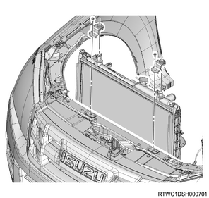

Radiator installation (4JJ1)
1. Radiator installation
1. Install the radiator to vehicle.
Note
- Be careful not to damage the radiator core with the fan blades. Install the radiator together with the hose as a unit.
2. Install the bracket to the radiator.
Note
- Support the radiator upper tank with the bracket to fix the radiator.

2. ATF hose connect
1. Connect the ATF hose to the radiator.
3. Radiator lower hose connect
1. Connect the radiator lower hose to the water intake pipe.
Tightening torque： 5 N・m { 0.5 kgf・m / 44 lb・in }

- Radiator lower hose
4. Fan shroud installation
1. Install the fan guide to the radiator.
Note
- Install the lower fan guide together with the fan shroud.
5. Cooling fan installation
1. Install the cooling fan to the fan clutch assembly.
Tightening torque： 8 N・m { 0.8 kgf・m / 71 lb・in }

- Fan clutch assembly
- Cooling fan
6. Fan guide installation
1. Install the fan guide to the radiator.
Note
- Install the upper fan guide.

- Upper fan guide
- Clip
- Lower fan guide
- Fan shroud
7. Radiator upper hose installation
1. Install the radiator upper hose to the water outlet pipe and the radiator.
Tightening torque： 5 N・m { 0.5 kgf・m / 44 lb・in }

- Radiator upper hose
8. Radiator reserve tank installation
1. Install the radiator reserve tank to the upper fan guide.
Tightening torque： 8 N・m { 0.8 kgf・m / 71 lb・in }

2. Connect the radiator reserve tank hose to the radiator.
Note
- When the radiator reserve tank is dirty, clean it before installation.
- Clean the radiator reserve tank using detergent.
- Scrub inside with detergent and water.
- Wash with clean water, and drain the water.
9. Intake air duct installation
1. Install the intake air duct to the turbocharger and the intercooler.
Caution
- Referring to the diagram, face the threaded portion of the clamp toward the engine front.
Tightening torque： 25 N・m { 2.5 kgf・m / 18 lb・ft } Nut, bolt
Tightening torque： 4 N・m { 0.4 kgf・m / 35 lb・in } Clamp (Turbocharger side)
Tightening torque： 5 N・m { 0.5 kgf・m / 44 lb・in } Clamp (Intercooler side)

10. Engine cover installation
1. Install the engine cover to the engine.

- Engine cover
11. Underguard installation
Note
- The following applies to models with an under air deflector.
1. Install the under air deflector to the frame.
Note
- Tighten the clip and the 5 bolts.
Tightening torque： 42 N・m { 4.3 kgf・m / 31 lb・ft }

- Bolt
- Clip
Note
- The following applies to models with front and rear underguard.
2. Install the rear underguard to the frame.
Note
- Tighten the 4 bolts.
Tightening torque： 42 N・m { 4.3 kgf・m / 31 lb・ft }
3. Install the front underguard to the frame.
Note
- Tighten the 5 bolts.
Tightening torque： 42 N・m { 4.3 kgf・m / 31 lb・ft }

- Front underguard
- Rear underguard
- Bolt
Note
- The following applies to models with front and rear underguard and an oil pan guard.
4. Install the rear underguard to the frame.
Note
- Tighten the 4 bolts.
Tightening torque： 42 N・m { 4.3 kgf・m / 31 lb・ft }
5. Install the oil pan guard to the frame.
Note
- Tighten the 4 bolts.
Tightening torque： 90 N・m { 9.2 kgf・m / 66.4 lb・ft }
6. Install the front underguard to the frame.
Note
- Tighten the 5 bolts.
Tightening torque： 42 N・m { 4.3 kgf・m / 31 lb・ft }

- Front underguard
- Oil pan guard
- Bolt oil pan guard
- Bolt
- Rear underguard
12. Coolant filling
1. Replenish the radiator with coolant.
Note
- Use the coolant contains 50 % anti-freeze solution.
- Pour coolant up to the filler neck.
2. Replenish the radiator reserve tank with coolant.
Note
- Pour coolant up to the MAX line.
3. Install the radiator cap to the radiator.
13. Coolant air bleed
1. Start the engine.
Note
- Idle the engine for 2 to 3 minutes.
2. Stop the engine.
3. Remove the radiator cap from the radiator.
4. Inspect water level.
Note
- If the water level is low, refill the water.
Warning
- Do not loosen or remove the radiator cap when the coolant is heated to a high temperature.
- Otherwise, you might be burnt with hot vapor or boiling water.
- To opening the radiator cap, place a folded thick cloth over the cap when the coolant is cooled, and turn it gradually to release the pressure before opening it.
5. Install the radiator cap to the radiator.
6. Start the engine.
Note
- Warm up the engine at approximately 2000 rpm.
- Set the temperature adjustment of the heater to the maximum temperature and circulate the coolant in the heater water system.
- Confirm that the thermostat has opened according to the position of the engine coolant temperature gauge indicator, and then idle the engine for about 5 minutes.
7. Stop the engine.
8. Remove the radiator cap from the radiator.
Caution
- Remove the engine after it gets cold.
9. Inspect water level.
Note
- Check the water level at the filler neck and add more if necessary.
- If the coolant is excessively low, inspect the coolant path and reserve tank hose for leaks.
10. Replenish the radiator reserve tank with coolant.
Note
- Pour coolant up to the MAX line.
14. Battery ground cable connect
1. Connect the battery ground cable to the battery.
2. Close the engine hood assembly.
3. Lower vehicle.